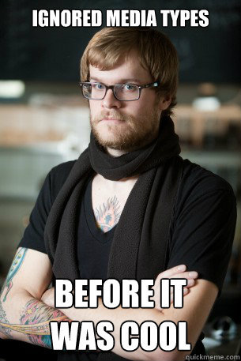

Media Typer
Media typer i HTML kan gi spesielle attributter til forskjellige elementer i HTML.
Du har f.eks "project", noe som gir særegne egenskaper til innholdet hvis personen på
siden din har lyst til å prosjektere innholdet. Eller så har vi print funksjonen,
som får nettsiden til å bruke et annet stilark hvis du vil printe ut innholdet av en nettside.
For å for eksempel bruke media typen @print, så kan man ha et eksternt stilark med attributten: " Media="print" ".
Det vil da si at hvis brukeren bruker "print ut" funksjonen i sin nettleser, så applier den stilarket med attributten
" Media="print" ". Dette gjør det mulig å kutte ned på unødvendige elementer før nettsiden blir printet ut.
Selv om media typer har gode ting ved seg, så er det fortsatt mange media typer som ikke blir
brukt. Mest på grunn av at det finnes semantiske tagger som gjør media typer en foreldet måte
på å gi mange av attributene som media typer kan gi. Media typer gjør heller ikke nettsider responsive,
noe som gjør det uaktuelt å bruke i dagens teknologiske økosystem.
